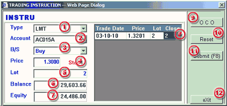

设置Limit/Stop指令
请跟随下列步骤完成Limit/Stop指令设置：
| 1 | Type - 选择LMT进行Limit / Stop指令设置。 |
 Limit
Order processing dialog |
| 2 | Account - 选择交易帐户。 | |
| 3 | B/S - 选择买/卖指令类型。 | |
| 4 | Price - 输入触发交易的价格。 | |
| 5 | Lot - 输入交易指令数量。 | |
| 6 | Balance - 所选择交易帐户的结余。 | |
| 7 | Equity - 所选择帐户的有效保证金。 | |
| 8 | Close - 输入即将平仓指令的数量。 | |
| 9 | OCO - 通过此按钮进入设置OCO指令窗口。 | |
| 10 | Reset - 清除所输入的平仓数量。 | |
| 11 | Submit(F8) - 提交指令操作。 | |
| 12 | Exit - 退出当前对话框。 |
用户在最后提交指令操作前必须确保填写的正确性,应仔细对校验对话框进行核对。
当指令提交成功后将以Unconfirm 状态显示于工作列表面板中，如果指令顺利成交则以Confirmed状态显示，如若出现异常而未能成交则显示为Cancelled状态。
指令被取消原因：
为遵循交易规则在 未确认 状态时用户可能需要取消Limit/Stop指令；查看怎样取消未成交指令.